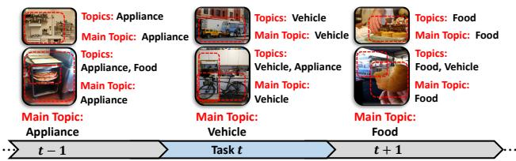

2 Fisher Dynamic Expansion on Q-Former Figure 22 Fisher Dynamic Expansion on Q-Former Figure 2. The framework of our exemplar-free incremental learning approach, ECA, for image-to-text generation. Upper Left: An input image is processed by a frozen visual encoder to produce features. These features enter the Mixture of Query module (❶), which generates query tokens to interact with the Q-Former equipped with Fisher Dynamic Expansion (❷), yielding language-informative visual representations. The representations are fed to the LLM as soft visual prompts to generate text conditioned on visual context. After the current task, visual features update the embedding dictionary via sparse dictionary learning. Upper Right: During training, the Dictionary Replay module (❸) replays the embedding dictionary to retain the former alignment.这张图概括 ECA 的整体方法流程。阅读时先看模块之间传递的训练信号，再看作者如何把目标拆成可优化的子问题。

(b) Our Method Figure 1(b) Our Method Figure 1. Comparison between (a) existing task splits (Del Chiaro et al., 2020; Zhang et al., 2023; Lei et al., 2023) and (b) our main topic split. (a) top-left illustrates methods that assume disjoint object categories and discard images containing multiple topics. (a) top-right illustrates methods that rely on disjoint background scenes. (b) defines each task by the image’s dominant semantic category (“main topic”), which accommodates overlapping semantics and shifts in focus across time or environments, yielding a more realistic continual OpenITG setting.这张图/表用于判断 ECA 的实验收益来自哪里。重点看替换、消融或跨模型设置下趋势是否一致，而不是只看单个最高分。